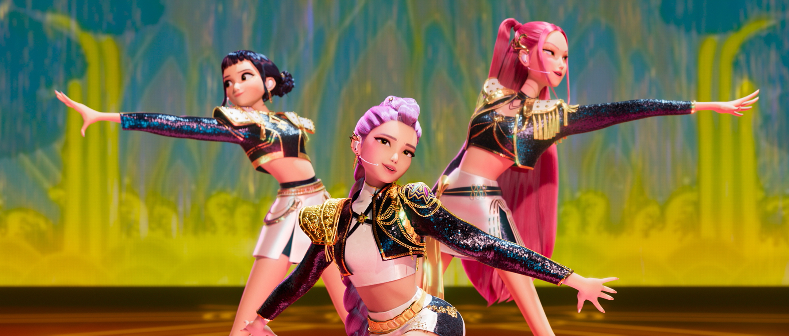
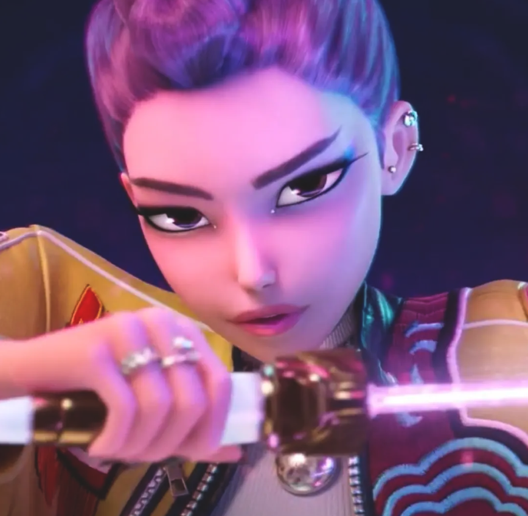
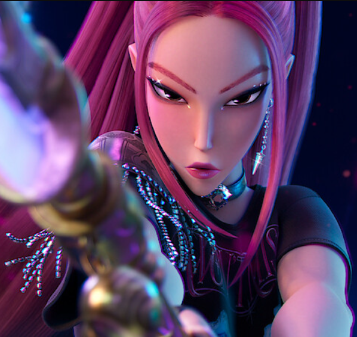
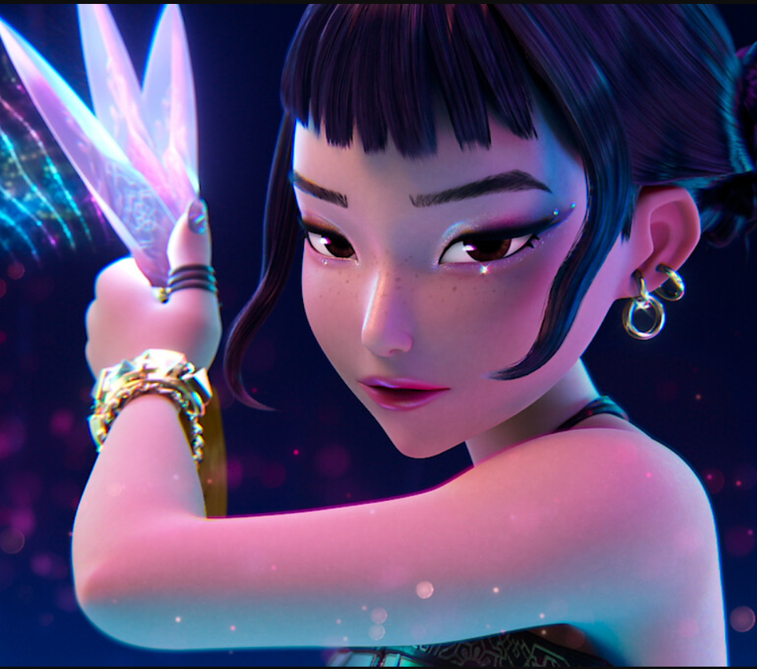

Kpop Demon Hunters |
|
¿Quiénes son?Kpop Demon Hunters es un grupo ficticio que combina la energía del K-pop con una narrativa fantástica de cazadores de demonios. |
|
IntegrantesEl grupo está formado por cuatro miembros, cada uno con un estilo único.

Rumi – La líder del grupo

Mira – La oveja negra de su familia

Zoey – La chica de New York |
|
CancionesSus Canciones mezclan ritmos modernos con letras que narran batallas épicas contra fuerzas oscuras.
|
|
Licenciatura en sistemas computacionales© 2026. Mauricio Osorio López |
|